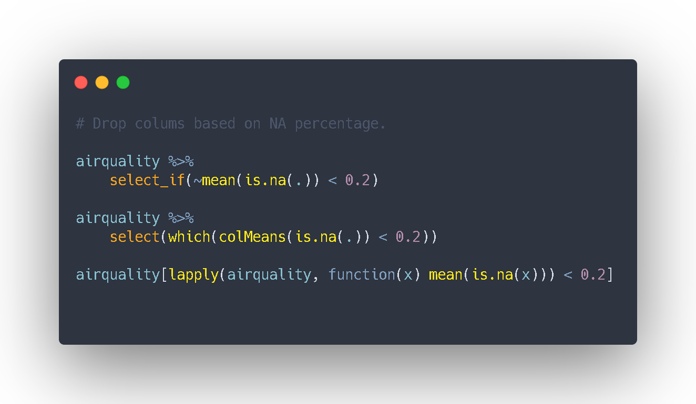

Los NAs pueden ser muy informativos, y estudiar cómo se distribuyen en base a una segunda variable suele ser una genial idea. Esto puede aportarnos un extra de información o mostrarnos un fenómeno que de otra manera(mediante imputación o descarte de observaciones) nos pasaría desapercibido.
Sin embargo, para un estudio preliminar o tras haber analizado los valores faltantes, nos encontramos casos en los que queremos quitarlos de manera automatizada basándonos en el porcentaje de NAs.
En este artículo hablamos y comparamos diferentes funciones de BaseR vs Tidy & Purrr para contar el número de NAs por columna.
¿Cuanto cuesta no salir del pipeflow? Dependerá del número de variables, del porcentaje que elijas como frontera y la distribución de NAs a lo largo de las variables, pero no suele ser más que unos pocos nanosegundos.
# library(microbenchmark) Puedes comparar su performance en diferentes datasets
library(tidyverse)
airquality %>% select_if(~mean(is.na(.)) < 0.2)
airquality %>% select(which(colMeans(is.na(.)) < 0.2))
airquality[lapply(airquality, function(x) mean(is.na(x))) < 0.2]¿Qué forma eliges tú?